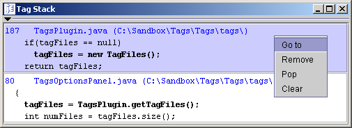

| Authors: | Kenrick Drew
Ollie Rutherfurd Shlomy Reinstein |
|---|---|
| Version: | 3.0.3 |
The Tags plugin allows one to "jump" to the definition of a class, function, variable, etc... using tag index files. For example, in C programs, the user can immediately jump to the definition of a desired function or data structure without having to know where or what file it is defined. Tag jumping can be accomplished by either selecting the desired tag, placing the cursor on the tag, or entering the tag.
Tag index files are created by ctags (http://ctags.sourceforge.net/).
For the Tags plugin to be useful, you must generate tag index files using ctags.
To generate a tag index file for all source files in the current directory:
ctags *
To generate a tag index file or all source files in the current directory and child directories:
ctags -R
See the man page or documentation that comes with your version of ctags for more information on using ctags.
Note that file paths in tag index file are relative to the generated file, unless you pass absolute paths to ctags.
Tag index files must be sorted, as the Tags plugin searches using a binary search. By default Exuberant CTags sorts generated tag index files.
There are 2 ways to jump to a desired tag:
The Tag Stack provides a visual history of tags you've followed and where you've jumped from. When you jump to (or follow) a tag, both the location you jumped from and the location of the tag you followed are pushed onto the Tag Stack. Aside from seeing how you've moved through buffers, the Tag Stack enables you to jump to any of the positions in the stack.
For each position, the Tag Stack displays the line number, filename and directory and the contents of the line (in bold). The line before and after are also displayed to provide some context.

The context menu for the Tag Stack provides the follow actions:
Tag Stack actions are accessible via Plugins > Tags:
Each jEdit View has it's own stack.
A tag collision can occur when there is more than one defintion for a specific tag as defined in the tag index files. This especially occurs on object oriented programming languages, and local projects where you are using a global system tag index file along with a local tag index file. To easily facilitate tag collisions, if more than one tag is found in the tag index files, you are presented, located under the cursor, a list of choices. You can select the desired tag by either using the mouse, keyboard arrow keys or number keys (1 - 9 only). The tag collision list can be dismissed with the Escape (Esc) key. The tag collision list can also be converted to a dialog with the Space key.
If the Tag List dockable window is open, the list will be shown in the dockable window instead of in a pop-up window. The Tag List dockable window provides a 'Filter' menu using which you can quickly filter the list of tags by the available attribute values.
The Tags plugin can be configured under the Plugins > Plugin Options....
Position dialogs under cursor:
If your window manager is set to have window focus follow the mouse pointer, and doesn't automatically shift the window focus to new dialogs/windows, this option can be helpful. Any dialog that the plugin creates will be automatically placed under the cursor. This is currently experimental. Note that this doesn't work well for window managers which automatically shift focus to new dialogs/windows.
Tags extend through member access operator:
When tagging in the text area, the plugin by default will consider the tag to be the word under the cursor as well as any member access.
If tag match is found continue searching subsequent tag index files:
By default, the first matching tag (or groups of tags if a tag collision occurs) found will stop the search. Using this option will allow all tag files to be searched, results in searches taking longer.
Use line numbers when following tags, if specified in the tag files:
Invoking Ctags with:
--fields=+lcauses it to add a "line" attribute to each tag, specifying the line number in which the tag is defined. By default, the "follow tag" operation ignores the line attribute of the tag and uses the pattern to locate the tag. This has the advantage that the tag may be located even if the file has changed since it was indexed by Ctags. However, using the pattern to locate the tag does not work if there are multiple tags with the same name and pattern in the file, which is common in object oriented languages (e.g. an actionPerformed method in several anonymous Java classes defined in the same file, or a C function definition and forward declaration in the same file). In such cases, the line numbers can be used to locate the tags. If the line attributes are specified in the tag files, using this option causes the "follow tag" operation to jump to the specified line number instead of searching for the pattern.
Number of tag files to keep in memory:
The tags plugin caches remote tag index files, when editing over FTP, SFTP, etc... To avoid loading remote tag index files every time you wish to jump to a tag defintion, these are cached. This value controls how many remote index files to cache in memory.
Keep local tags files in memory
If enabled, tag index file located on the local filesystem are cached in memory, just as remote ones, rather than reading them as a RandomAccessFile. This may result in slightly faster searching, but can dramatically increase memory usage.
List of actions that provide the "follow tag" functionality with filtering of the tag list in case of collisions. For example, you can create an action that jumps only to function prototypes, or only to tags that belong to a certain class. The filtering is based on tag attributes. Ctags provides command- line options for adding various tag attributes (fields) to its tag files, such as access, class, kind, scope etc. For custom actions to work, this attribute information must exist in the tag files.
Each action that you add has a name, an associated attribute and a list of values for that attribute. When the action is invoked, it first runs the "follow tag" action, and if tags are found, it goes over the list of values one by one, and for each value it reduces the list to only those tags having this value for the attribute. If tags were found to have this value for the attribute, these tags are then used for jumping or for the tag collision popup/dockable. If no tags in the list have any of the values, the action indicates that no tags were found.
List of tag index files the Tags plugin uses to search for tag definitions.
"tags" is a special entry that doesn't represent an actual file but rather the name of the file to look for in the current buffer's directory. The Tags plugin can also search for this file in the current buffer's parent directories. Double-click on the entry to edit it.
The order of entries in the list is the order in which files will be searched.
Here are some suggested key bindings. These do stomp on some jEdit key bindings, but I find that they work well. They are based on the vi (and it's clones) key bindings for tagging.
| Action | Shortcut |
|---|---|
| Follow Tag | C+] |
| Follow Tag (New View) | C+S+] |
| Follow Tag... | A+] |
| Pop Position | C+T |
Keyboard shortcuts can be defined under the Shortcuts node of the Global Options dialog.
Also one can place the tagging commands in the Context Menu. Context menu items can be defined under the Context Menu node of the Global Options dialog.
You can find the Exuberant C Tags program at:
http://ctags.sourceforge.net
Exuberant C Tags is also included in the cygwin distribution for Windows.
You can also use the standard UNIX ctags program, or the GNU C Tags program, but you'll find that Exuberant C Tags provides a bit more info (or too much depending on how much of a minimalist you are).
The source code is distributed under the GPL. Please see http://www.fsf.org/copyleft/gpl.html.
See TODO.TXT
The preferred way to send bug reports or feature requests is to use the Sourceforge Bug Tracker at http://sourceforge.net/bugs/?group_id=588.
You can also write to: